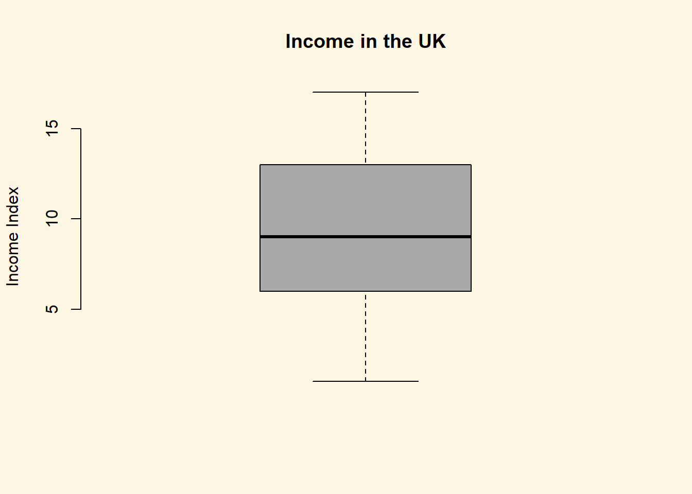
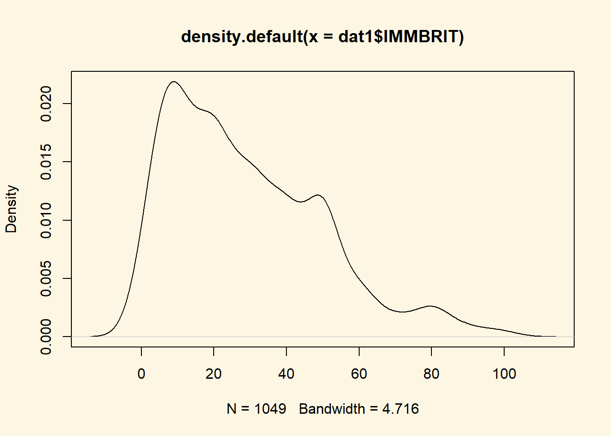

Chapter 5 Descriptive Statistics
5.1 Seminar
Descriptive statistics are a good way to get a “feel” for the data and are an important first step for data analysis. Here we will explore two types: central tendency and dispersion.
Again, as good practice, let’s first clear our workspace:
5.1.1 Central tendency
Central tendency explores the value of the observation at the center of a variable’s distribution. This is the average or “typical” observation. What measure of central tendency you use depends on type of variable. In general, you use the following measures:
◦ Categorical variables – mode
◦ Ordinal variables - median
◦ Continuous variables – meanAs a recap:
◦ Categorical variables are unranked categories, such as political parties.
◦ Ordinal variables have categories that are ranked on a scale, i.e. council tax bands.
◦ Continuous variables have integer values and are simply not countable, i.e.income.
◦ Count variables represent countable data such as crime incidents
◦ Binary variables have only two categories i.e. employed or unemployed.Let’s first open some real data again:
[1] 1049 13We can explore this in R by summarising our data: .
IMMBRIT over.estimate RSex RAge
Min. : 0.00 Min. :0.0000 Min. :1.000 Min. :17.00
1st Qu.: 10.00 1st Qu.:0.0000 1st Qu.:1.000 1st Qu.:36.00
Median : 25.00 Median :1.0000 Median :2.000 Median :49.00
Mean : 29.03 Mean :0.7235 Mean :1.544 Mean :49.75
3rd Qu.: 40.00 3rd Qu.:1.0000 3rd Qu.:2.000 3rd Qu.:62.00
Max. :100.00 Max. :1.0000 Max. :2.000 Max. :99.00
Househld paper WWWhourspW religious
Min. :1.000 Min. :0.0000 Min. : 0.000 Min. :0.0000
1st Qu.:1.000 1st Qu.:0.0000 1st Qu.: 0.000 1st Qu.:0.0000
Median :2.000 Median :0.0000 Median : 2.000 Median :0.0000
Mean :2.392 Mean :0.4538 Mean : 5.251 Mean :0.4929
3rd Qu.:3.000 3rd Qu.:1.0000 3rd Qu.: 7.000 3rd Qu.:1.0000
Max. :8.000 Max. :1.0000 Max. :100.000 Max. :1.0000
employMonths urban health.good HHInc
Min. : 1.00 Min. :1.000 Min. :0.000 Min. : 1.000
1st Qu.: 72.00 1st Qu.:2.000 1st Qu.:2.000 1st Qu.: 6.000
Median : 72.00 Median :3.000 Median :2.000 Median : 9.000
Mean : 86.56 Mean :2.568 Mean :2.044 Mean : 9.586
3rd Qu.: 72.00 3rd Qu.:3.000 3rd Qu.:3.000 3rd Qu.:13.000
Max. :600.00 Max. :4.000 Max. :3.000 Max. :17.000
party_self
Min. :1.000
1st Qu.:1.000
Median :2.000
Mean :3.825
3rd Qu.:7.000
Max. :7.000 However, this can be less useful when you have many variables in the data frame. So instead you can summzarise the variables of interest by subsetting:
IMMBRIT over.estimate
Min. : 0.00 Min. :0.0000
1st Qu.: 10.00 1st Qu.:0.0000
Median : 25.00 Median :1.0000
Mean : 29.03 Mean :0.7235
3rd Qu.: 40.00 3rd Qu.:1.0000
Max. :100.00 Max. :1.0000 Here the mean and median is reported. Again the median is relevant for ordinal values, while the mean is best for continuous, count and binary variables.
Large differences between the median and mean could indicate that a variable is skewed; when a variable has extreme values or many 0s which drags the mean either side of the median. For example, we often refer to “median incomes,” even though income is a continous variable. Here the median is used because the mean is dragged to the right by extremely wealthy outliers, while most incomes are in fact clustered as the lower end. The median income in the UK for 2014/15, before housing costs, was £473 per week. But for the mean, weekly income is placed at £581.
You may have noticed that the mode is not reported. To gain the mode you can create a frequency table and then use the order function to display the most common categories first. This is done by using the table and order functions:
7 1 2 6 5 4 3
383 284 280 32 31 23 16 As you can see, category 7 is the most common category, with the number of observations reported below the category.
5.1.2 Dispersion
Dispersion measures the spread of values within a variable. Again, the precise measure of dispersion depends on the level of measurement:
◦ Categorical/binary variables – proportion of each category
◦ Ordinal variables – range or interquartile range
◦ Continuous/count variables – variance or the standard deviationCategorical variables and proportional percentages
Let’s first start with categorical variables (not this is also applicable for binary variables). Here we should again look at the a frequency table to understand the proportion of each category, in this case the proportion of observations for each political party:
#and the percentages, rounded by two decimal spaces and then multiplied by 100
round (table1 /sum(table1), 2)*100
1 2 3 4 5 6 7
27 27 2 2 3 3 37 This variable does not have labels for the categories, but by looking at the codebook of this data set we know the categories are as followed: 1 - Conservatives 2 - Labour 3 - SNP 4 - Green 5 - UKIP 6 - BNP 7 - Other
Perhaps this is not the best sample of our population, since there is no category for the Liberal Democrats!
Ordinal variables and the interquartile range
For ordinal variables, the most useful way to explore dispersion is by looking at the interquartile range. This can be visualised by plotting a simple box plot.
Note that with plots in R we have to provide arguments to design the plot, which are seperated by commas. Below we select: i) the variable of interest within the data frame (using the $ symbol), ii) add labels for the graph and y-axis, iii) remove the frame around the plot using the frame.plot function iv) choose the colour.
boxplot(
dat1$HHInc,
main = "Income in the UK",
ylab = "Income Index",
frame.plot = FALSE,
col = "darkgray"
)
The box that is displayed within the plot represents the location of 50% of the data, between the 25% and 75% quartiles. The line within the box tells us the median. The two lines outside of the box shows us the data that falls within 1.5 times the quartiles.
Continuous variables and the standard deviation
For continuous (and count) variables we can look at the standard deviation. This tells us where 68% of the data can be found, since 68% of the data falls within one standard deviation of the mean. This can be done in R with a simple function. Here we are looking at British perceptions of non-Western immigration:
[1] 21.06331We can then compare this to the mean, which is another way to see if a continous variable is skewed:
[1] 29.03051With the standard deviation at 21 and the mean at 29, we can see there is a large gap which indicates skewedness. But we can also simply visualise this by plotting the density of the variable:

As we can see most of the data is in the left hand side of the graph with fewer larger values on the far right of the graph. This drags the mean to the right which explains the large difference with the standard deviation. In this case it would be more appropriate to use the median (as is the case with income in the example above). When we run the median below, it is much closer to the centre of the data:
[1] 25To clear the graphs from our workspace, we can use the dev.off function with brackets:
null device
1